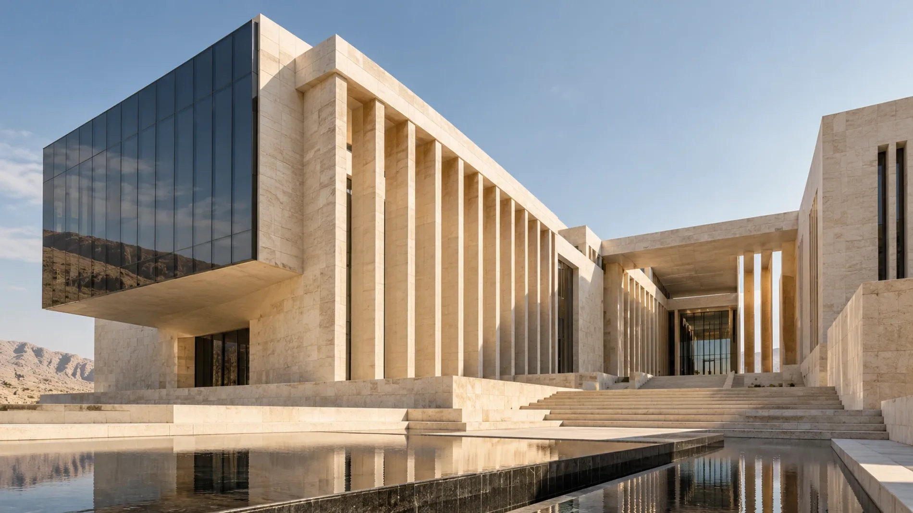
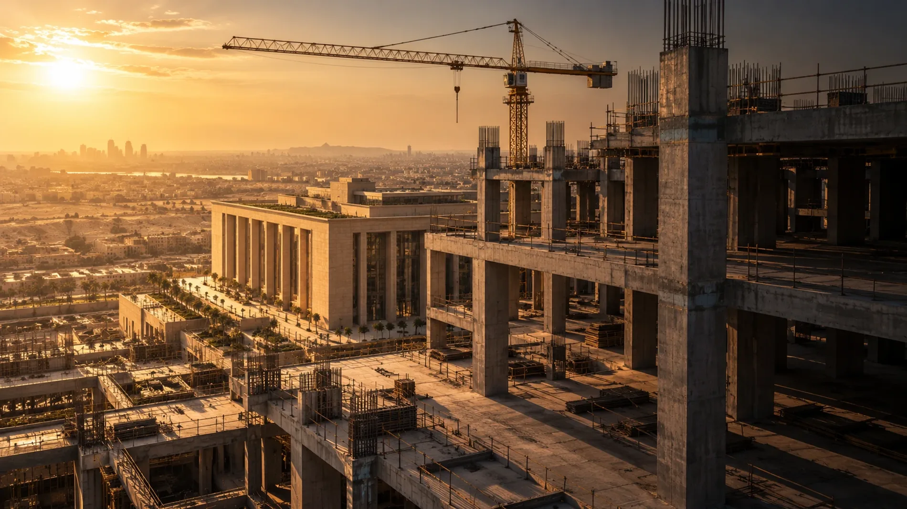
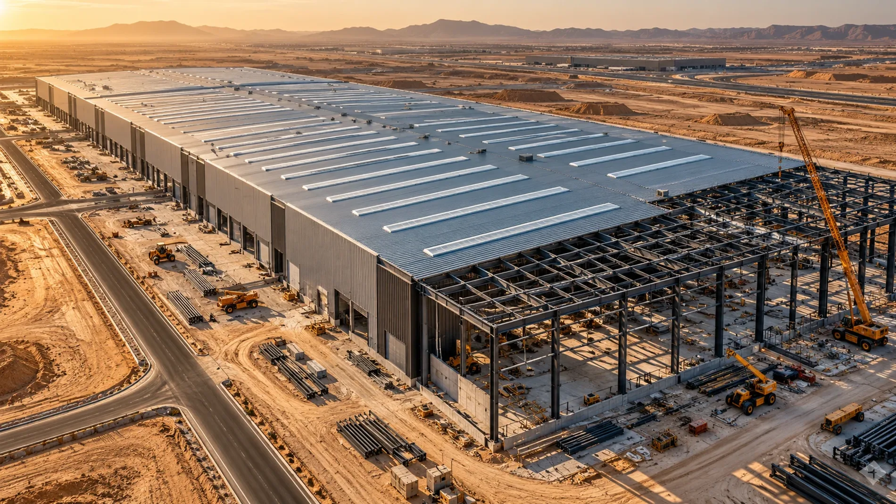

مبانٍ إدارية / القاهرة الجديدة
مجمع النيل للأعمال
مبنى إداري يفتح على الماء، صُمّم ليُسلَّم على مراحل دون أن يتوقف العمل في الأدوار العليا.
- الدور
- مقاول عام
- المساحة
- 18,000 m²
- الحالة
- 2025 / مكتمل افتراضياً
مشروع افتراضي وصورة توضيحية
نموذج تصميمي • الصور والمشروعات والأرقام توضيحية

بانوراما — نموذج تصميمي
مقاول عام في مصر. مبانٍ، صناعة، وبنية تحتية — يرويها الموقع نفسه، لا الشعارات.
شاهد الفصول الثلاثة01 — ما نؤمن به
نصّ توضيحي
02 — ثلاثة فصول

مبانٍ إدارية / القاهرة الجديدة
مبنى إداري يفتح على الماء، صُمّم ليُسلَّم على مراحل دون أن يتوقف العمل في الأدوار العليا.
مشروع افتراضي وصورة توضيحية

صناعة ولوجستيات / العاشر من رمضان
بحور معدنية واسعة فوق أرضيات تخزين، نُفّذت قطاعاً بعد قطاع ليبدأ التشغيل قبل اكتمال الهيكل.
مشروع افتراضي وصورة توضيحية
بنية تحتية / مدينة الشروق
شبكات وطرق تحت أقدام حيّ كامل، نُفّذت والحركة مفتوحة وسكان المنطقة في بيوتهم.
مشروع افتراضي وصورة توضيحية
03 — الصنعة
نطاق متكامل يبدأ بتجهيز الموقع، ويمرّ بالأعمال الإنشائية والواجهات والتشطيبات، وينتهي بالتسليم.
ناقش متطلباتكمسار واحد يربط القرار التصميمي بإمكانات التنفيذ ومتطلبات البرنامج واحتياجات الاستخدام.
ناقش متطلباتكعناية بالتفاصيل المعمارية وتنسيق الأنظمة الكهروميكانيكية، لتعمل المساحات كما ينبغي لا كما اتفق.
ناقش متطلباتك04 — الشركة
بانوراما شركة مقاولات مصرية تعمل في المباني والصناعة والبنية التحتية. الأرقام أعلاه توضيحية وليست سجلاً فعلياً.
05 — ما نتعهّد به
نخطّط قبل أن نَعِد، ونراجع المخاطر قبل أن نبدأ.
نُبقي الموقع آمناً، ونعتمد المواد والأعمال بفحص موثّق.
نُسلّم ما نُفّذ فعلاً، موثّقاً، لا ما كان مرسوماً فقط.
منهج توضيحي. لا تُعرض شهادات أو اعتمادات غير متحقَّقة.
06 — لنتحدث
هذا نموذج محلي تجريبي؛ لا تُرسل أو تُحفظ أي بيانات. استخدم معلومات تجريبية فقط.